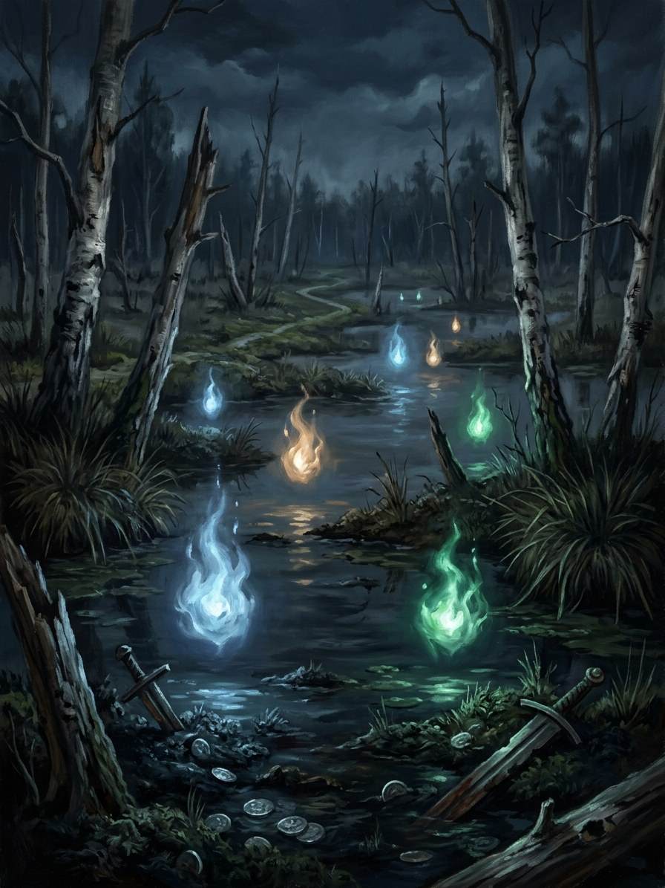

Žaltvykslės (bog-lights, treasure-flames)¶
Ryšiai
Servant of: Velnias — Velnias’s ledger of cheated boundaries and debts.
Origin [Historical record] straying lights as souls (some of dishonest surveyors); treasure that shows itself as a flame · [The saga's invention] both belong to Velnias's ledger
Tier Dvasia · Velnias's ledger of cheated boundaries and debts
Danger I nuisance → II hazard
Habitat Bogs and meadows at night; a field flame on Rasos or Vėlinės
Wants Followers to join their measuring; buried debts paid
Takes Travellers who follow. A treasure's claimant: a death in the finder's family within the year
Signs Lights that move against the wind; a flame in a field that throws no heat
Banes Do not follow. Turn your coat inside out to break the pull
Half-wrong truth. Both folk stories are true. Bog-lights are the dead who cheated on boundaries and debts, walking the lines they falsified. Treasure-flames are wealth buried with a curse or bargain, still owed to the roots.
Multiplying. Once the Order and the new lords measure land by the furlong (the Gold-Glutton's appetite) the lights multiply. Over Samogitia after 1398 they walk in rows, like surveyors.
Leading astray. Following a light means joining its measuring.
Treasure-flame. Taking a treasure means taking on its debt.
Claiming treasure. Throw a shirt on the flame and do not look back. A death follows in the family within the year, and the money is warm.
Turning the coat. Costs nothing, if you remember in time.
Žaltvykslės (bog-lights, treasure-flames)

Žaltvykslės (bog-lights, treasure-flames) · creature¶
Tipas |
creature |
Status |
The saga’s invention |
Pastaba |
Bestiary §9. Danger I → II. |
Folk source [Historical record]¶
Lights over bogs and meadows at night, believed to be souls that lead travellers astray (klystžvakės, „straying candles“); in Lithuanian tradition some are the souls of dishonest land-surveyors condemned to measure fields at night. Separately, hidden treasure was said to show itself as a flame (pinigai dega, „the money is burning“) on certain nights; a brave finder might claim it by throwing clothing onto the flame, though the devil or the dead guard it and demand a price.
In the saga (where the folk are half-wrong)¶
Both are true and belong to Velnias’s ledger. Bog-lights are the dead who cheated on boundaries and debts and walk the lines they falsified; following one means joining its measuring. Treasure-flames are wealth buried with a curse or bargain, still owed to the roots; taking one means taking on its debt.
Signs & habitat¶
Lights that move against the wind; a flame in a field on Rasos or Vėlinės night that throws no heat.
Before / after the Unbinding¶
Before: rare and largely harmless if ignored. After the Order and the new lords measure land by the furlong (the Gold-Glutton’s appetite) the bog-lights multiply; over Samogitia after 1398 they walk in rows, like surveyors.
Banes, wards, bargains, and their cost¶
Do not follow; turn your coat inside out to break the pull (cost nothing, if you remember in time). To claim a treasure, throw a shirt on the flame and do not look back, and in the saga a death in the finder’s family follows within the year; the money is warm.
Danger level¶
I nuisance → II hazard.
Story hooks¶
Book II: Henė’s minor devils seeding treasure-flames to buy Vytautas’s boyars. Book IV: the Melno border (1422) lit at night by ten thousand bog-lights.
Sąsajos¶
graph LR
velnias["Velnias"]
zaltvyksles["Žaltvykslės (bog-lights, treasure-flames)"]
zaltvyksles -->|Servant of| velnias
style zaltvyksles stroke-width:3px